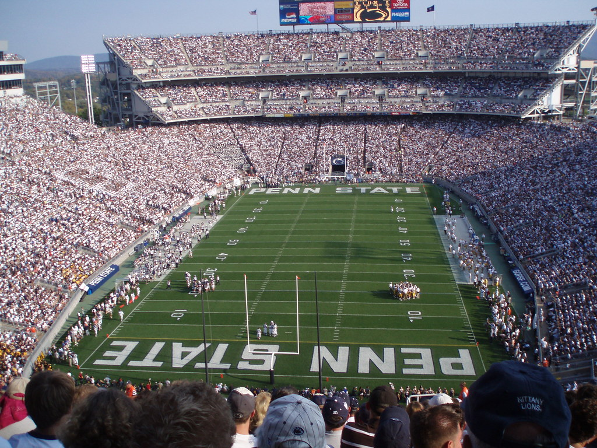

Philadelphia and Pittsburgh are great cities to visit and have a lot to offer. But Pennsylvania is a big state and there is so much more to it then just the big cities. There are smaller cities and towns you should check out while in PA. Lancaster, Hershey, State College, Jim Thorpe, and Centralia to just name a few. Lancaster, Reading and Kutztown are home to the Amish. Amish are a strict religious Christian group of German descent. Most don't use any electricity or drive cars. They do everything by hand. The best and longest lasting furniture is made by them. They also have food stands on the side of the roads selling pies and vegetables. Hershey "the sweetest place on Earth" is home to the worlds best chocolate. Take a tour of the Chocolate factory, go on some crazy rides at Hershey park, and visit ZooAmerica. State College is home to Penn State University. One of the largest universities in the country. If you like football, go to a PSU game at Beaver Stadium. Beaver stadium is the 3rd largest general stadium in the world! Jim Thorpe is nicknamed "litle Switzerland of America" nestled in the Poconos. Centralia is a ghost town literally on fire. It was the bases of the horror video game turned movie called "Silent Hill"
